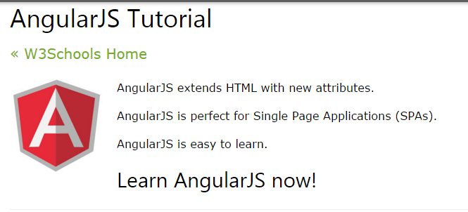
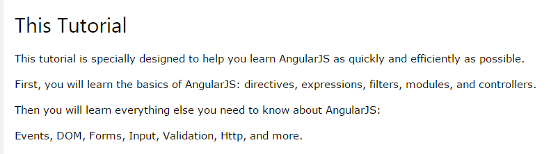

Selamat Datang di AngularJS
Chapter 1 - jQuery Tutorial
Intro - Pengenalan Dasar
Expressions - {{}}
Modules - var app= angular.module("aplikasi1", []);
Directives - penunjuk - memperluas tag html
Model - sumber data - bagian dari penunjuk
Controllers
Scope
Filters - untuk filter data
Services - $location, $http, $timeout
Http - data dari file luar
Tables - menampilkan data dari server ke tabel
Select - tag select html
SQL - hanya fetching data
DOM
Events - event mouse, keyboard
Forms - form inputan html
Validation - validasi sebuah inputan
API - lebih ke konversi data agar validasi data sesuai
Includes - seperti include milik PHP
Animations - butuh angular-animate.js
Application - contoh aplikasi
Chapter 2 - ng-Croppie
croppie-basic

DEF MC
